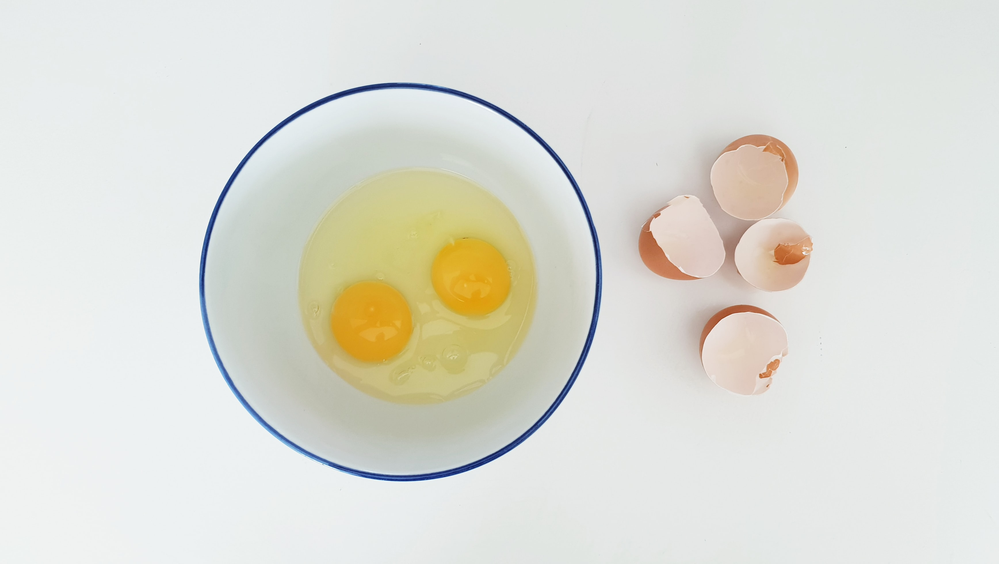

Easy Omelette

Description
Have you been thinking you could never make an omelette at home without a griddle? It is easier than you think!
This a foundational recipe that you can easily add more ingredients to. Master this and get creative!
Ingredients
- Eggs
- Cheese (Optional)
- Kosher Salt
- Black Pepper
Steps
- Crack 3 eggs into a medium bowl and whisk
- Add 1 tbsp of room temperature water to the whisked eggs and whisk again
- Heat a stainless steel or cast iron pan on the stovetop at medium low. Make sure the pan is adequately pre-heated before adding anything to the pan
- Add 1 tbsp of butter or neutral cooking oil to the pan
- Add eggs to the hot pan. They should sizzle when they hit the pan
- Lift the pan off of the burner and swirl the eggs until the eggs cover the bottom of the pan
- Wait 1-2 minutes for the eggs to partially cook
- Add salt and pepper to taste
- Using a cooking utensil push one part of the egg to the center of the pan about an inch and angle the pan so the uncooked egg moves onto the now exposed pan
- Repeat 3 more times (or more, as needed) in different areas of the pan. You should see folds forming in the eggs. You'll know you are done when very little to no liquid eggs remain on top of the forming omelette
- Add cheese, if desired
- Carefully fold 1/4 to 1/3 of the omelette over itself to start the roll
- Push the partially rolled omelette down into the bottom of the pan and roll another 1/4 to 1/3 of the omelette
- Push the omelette down again and roll, if needed
- Let the fully folded omelette cook in place for another minute
- Transfer to a plate and enjoy!